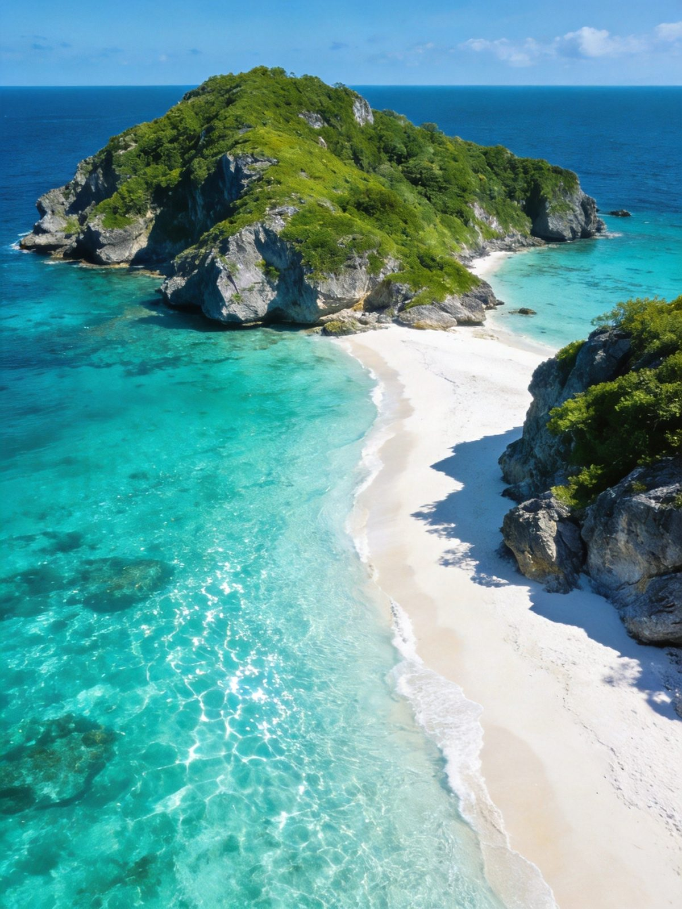
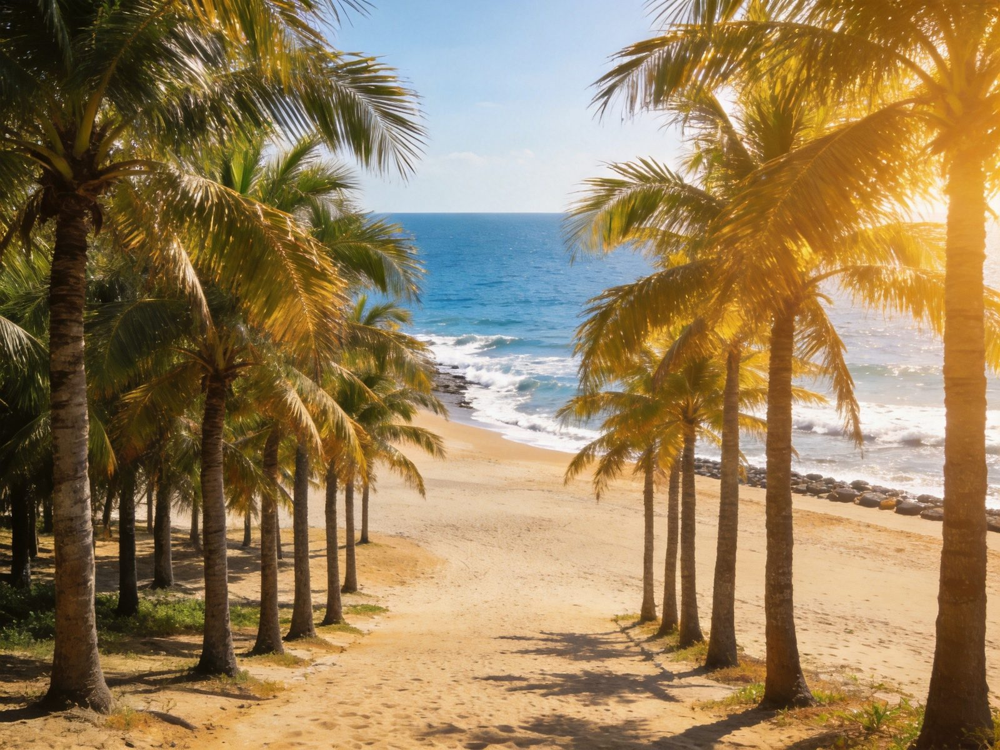
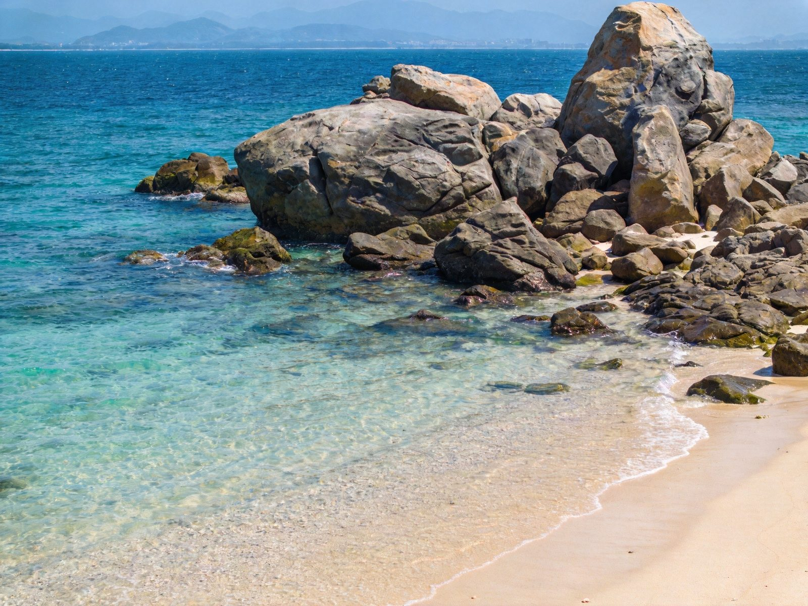
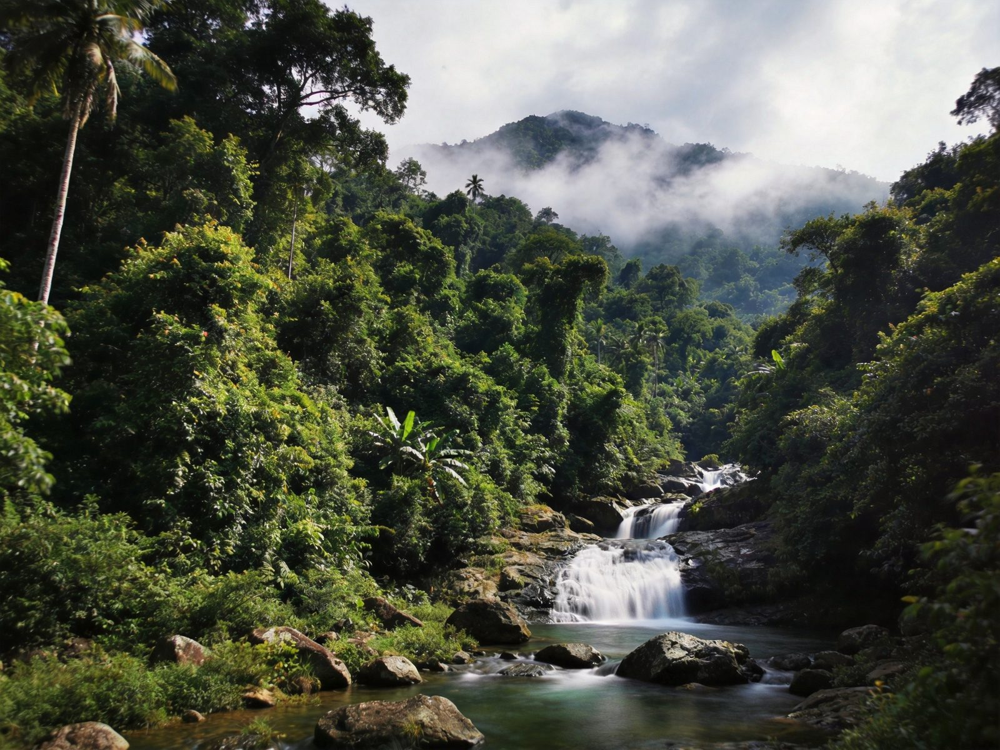

封面
总览
行前准备
Day1 分界洲
Day2 清水湾
Day3 山与归
美食清单
组合·贴士
安全提示

LINGSHUI · 陵水
岛屿 · 海湾
陵水 · 分界洲 · 清水湾
分界洲岛
清水湾
椰林大道
吊罗山
酸粉
2–3 天 · A5 手册 · 海岛/亲子/度假
1
/ 9
陵水
动线总览
3 天怎么玩
Route Overview
Day 1
登岛
分界洲岛
乘船登分界洲岛 → 玩水踏浪 → 海岛半日
Day 2
海湾
清水湾 · 椰林大道
清水湾沙滩 → 椰林大道 → 海边日落
Day 3
山归
吊罗山 · 返程
吊罗山/雨林呼吸 → 酸粉午餐 → 返程
TIP
海岛与海湾
两晚三样
节奏最舒服；两天可砍吊罗山，登岛+清水湾就够惊艳。
TIP
🎫 分界洲岛船票+门票约 130–160 元（以现场为准），清水湾等海滩免费。
2
/ 9
陵水
行前准备
出发前，记住这 3 点
Before You Go
🏨 住哪最顺
清水湾片区
：推窗见海，度假氛围浓，
首选
县城（椰林镇）
：吃酸粉、逛市场方便
想安静看海选分界洲岛周边民宿
🚄 怎么走
高铁
：海口—陵水约 1.5 小时；三亚—陵水更近约 0.5 小时
飞机
：飞三亚或海口后转高铁/打车
岛上/海湾分散，
打车/包车
较为省心
🎒 必带
防晒、墨镜、泳衣、晴雨伞、拖鞋
登岛玩水带防水袋，海边多备水

椰林大道 · 椰影
3
/ 9
陵水
Day 1 · 登岛
Day 1 · 登岛
分界洲岛
码头登船
→
分界洲岛
→
玩水踏浪
🏝 分界洲岛
景色一绝的海岛，海水透蓝、沙滩细软
可玩水、浮潜、看海，岛上步道观景非常出片
⛵ 登岛玩法
码头乘船大约十几分钟到达，建议
早去早回
带长辈/孩子可岛上茶歇慢逛，亲水平台轻松玩水
TIP
登岛船次有班次，
先确认返程时间
再尽情玩；玩水项目提前问清价格与时长。

分界洲岛 · 碧海
4
/ 9
陵水
Day 2 · 海湾
Day 2 · 海湾
清水湾 · 椰林大道
清水湾沙滩
→
椰林大道
→
海边日落
🏖 清水湾
因海水清澈得名，沙滩平缓、海风舒服
踩沙踏浪、看海发呆，度假感满分的海湾
🌴 椰林大道
沿湾椰林成行，骑行兜风很惬意
树影婆娑，是拍照与放空的绝佳路段
TIP
清水湾日落很美，
下午过去、黄昏看落日
；椰林大道骑行租车记得检查车况。
清水湾 · 碧水银沙
5
/ 9
陵水
Day 3 · 山与归
Day 3 · 山与归
吊罗山 · 返程
吊罗山雨林
→
酸粉午餐
→
返程
🏔 吊罗山（热带雨林）
原始热带雨林，林木葱郁、空气清新
若时间紧可略过，
海景为主
的旅程同样完整
🍜 陵水酸粉
陵水资源招牌，酸辣鲜香、配料丰富
县城/市场里的酸粉店最地道
TIP
回程可顺
高铁到三亚或海口
；酸粉清爽开胃，适合旅途结束前吃一碗。

吊罗山 · 雨林
6
/ 9
陵水
美食清单
陵水的味道
Lingshui Eats
🍜
陵水酸粉
酸辣鲜香、配料丰富 —— 中国唯一的热带醋米粉
🦐
海鲜
清蒸鱼、白灼虾、花蟹 —— 渔港市场现点
🥥
椰子 & 椰汁
现开椰子、椰奶清补凉 —— 解暑必备
🥭
热带水果
芒果、莲雾、荔枝 —— 路边果园现切
🐔
文昌鸡/白切鸡
海南四大名菜 —— 正餐主食
🍢
烧烤&夜宵
海边烧烤、炒粉 —— 夜晚烟火气
TIP
酸粉
多放辣酱更地道
；海鲜先问计价单位，热天多喝椰汁补水。
7
/ 9
陵水
组合 · 贴士
怎么串着玩
Combine & Tips
👨👩👧
亲子
分界洲登岛玩水 + 清水湾踩沙，孩子最爱的组合
🏝
度假客
清水湾为主慢度假，抽半天登分界洲岛即可
🚗
交通
县城与海湾、码头分散，打车/包车最顺；高铁站到县城近
🌤
天气
冬季温暖是旺季；夏季炎热多雨，午后可能有阵雨
🔗
连玩
三亚—陵水很近，可一日往返或串联环岛
TIP
陵水的打开方式：
一天上岛、一天下海
，把节奏放慢，椰影与碧波够看够玩。
8
/ 9
陵水
安全提示
看清这些，玩得更安心
Stay Safe
🏖
水上安全
玩水浮潜看清区域与警示，不逞强，看护孩子
☀️
防晒
海上日晒强，定时补凃防晒、多喝水，避免暴晒
⛵
乘船
登岛穿好救生衣，晕船可先备晕船药
🦐
消费
海鲜/水上项目先问清计价单位，留凭证
⛈
天气
台风/雷雨季留意预报，海岛与海上减少逗留
⚠️
紧急
紧急拨 110 / 120 / 119；码头游客中心可求助
椰影碧波「WorldStip」祝你玩得尽兴 🏝
9
/ 9
陵水 · 分界洲岛 · 椰影海湾 2-3 日手册 · 由 WorldStip 定制
Insta360
记录美好
记录美好生活
相机指南 · CAMERA GUIDE